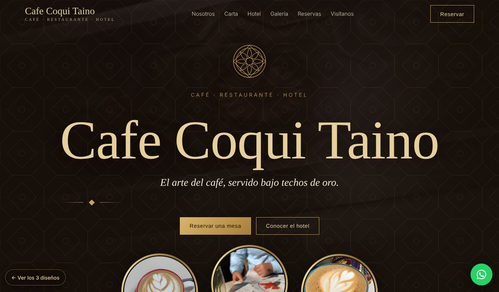
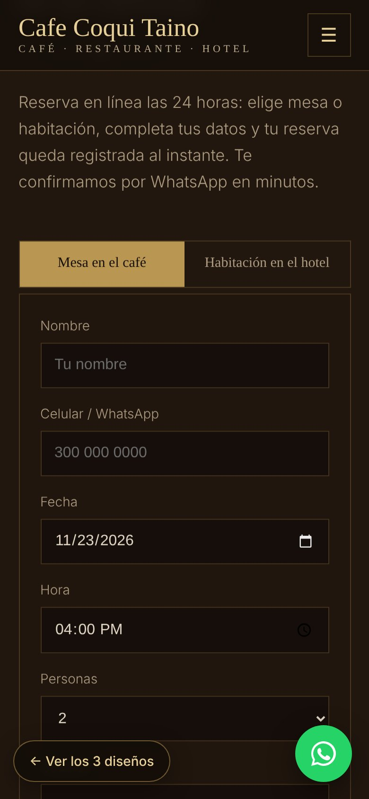
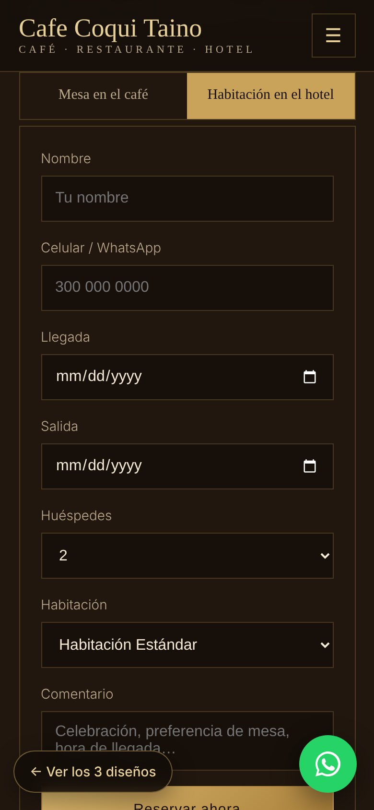
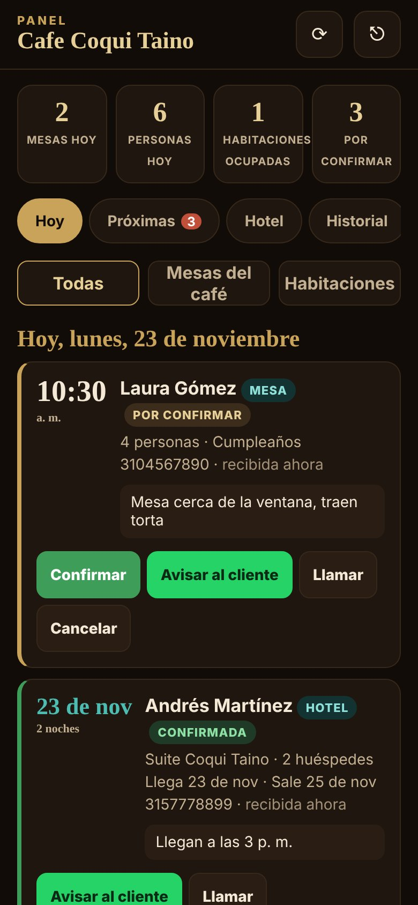
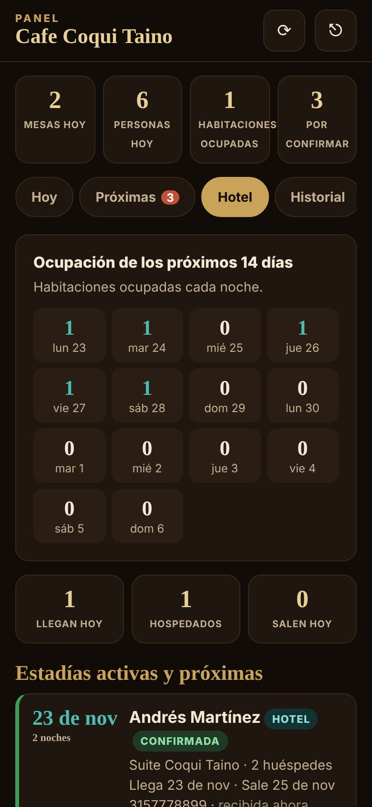
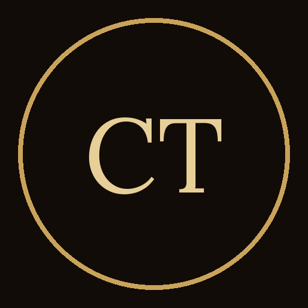

Página web oficial
Tres diseños para escoger, con el café, el restaurante y el hotel.
- Carta con fotos en alta calidad y galería con zoom
- Hotel con habitaciones y comodidades
- Ubicación en Google Maps y vista previa en WhatsApp
Café, restaurante y Hotel Cafe Coqui Taino · Centro Comercial Coqui Taino, parque principal de Filandia, Quindío.
Cuatro piezas que trabajan juntas: los clientes te encuentran, reservan solos y tú lo manejas todo desde el celular.

Tres diseños para escoger, con el café, el restaurante y el hotel.


Abiertas las 24 horas desde cualquiera de los 3 diseños.


Desde el celular, con clave privada.

El panel se instala en la pantalla de inicio, sin descargar nada de tiendas.
De la página del cliente a tu panel en segundos.
Cuando escojas tu diseño favorito, solo necesitamos estos datos:
WhatsApp del negocioLo puedes poner tú mismo en el panel, en Ajustes.
Horarios y días de descansoDel café y de la recepción del hotel.
Habitaciones y preciosNombre, capacidad y lo que incluye cada habitación.
Fotos originalesDel café, los platos y el hotel, enviadas por WhatsApp como documento para que queden en máxima calidad.